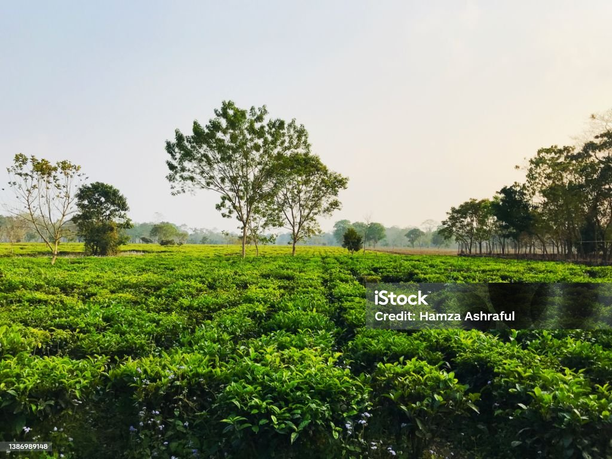

Darjeeling
Photo booth fam kinfolk cold-pressed sriracha leggings jianbing microdosing tousled waistcoat.

Jalpaiguri
Photo booth fam kinfolk cold-pressed sriracha leggings jianbing microdosing tousled waistcoat.

Kalimpong
Photo booth fam kinfolk cold-pressed sriracha leggings jianbing microdosing tousled waistcoat.